Operating Documentation
Direction 5193755-800, Rev# 8
BrightSpeed (Ltd. Access) Service Methods - Adv
Operating Documentation |
The [Z-AXIS TRACKING] tool is a new [TAB] , located within the Analysis Tool. The tool can be used to plot various tracking functions, using a Scan Data Set. For a scan data set, the analysis package can plot different data versus views in [UN-FILTERED ] (the default) or [FILTERED] (20 pt. Boxcar) formats. Numerical information (“Max”, “Min”, “Mean”, and “Std. Dev.”) is also provided. In some plots, the numerical information provided can be used for further analysis by comparing it to a “specification” value, as an indication of a pass/fail condition. Whereas other plots are more general, and in some cases may be useful, they are typically only used for troubleshooting.
Illustration 1: Top Level Tracking Menu
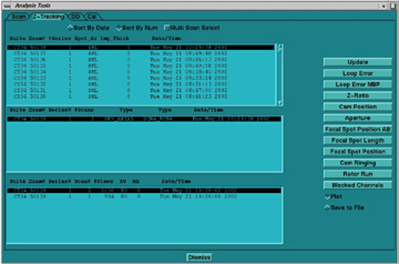
In the illustrations that follow, examples of “known” tracking plots are shown. Since plots vary from system to system, the examples shown should be used only as guides. Compare your system’s plots and analyze them relative to the specification shown in each illustration. The plots shown are [UN-FILTERED] views, which is the default option when they are plotted. A 20 point boxcar filter takes the 20 view average and then plots the data.
Illustration 2: Single Scan Pop-Up Menu
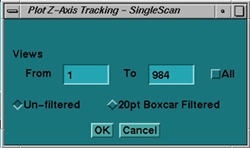
A value is not considered to be out of specification unless the limit is exceeded for a sustained interval of 100 views or more. In the cases where specifications are not given, consider plots informational only.
A [LOOP ERROR] is the difference between the calculated position of the beam minus the desired target’s position (operating point) obtained during Collimator Calibration.
Illustration 3: Loop Error Plot
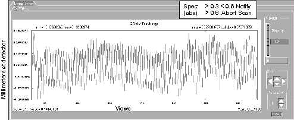
A [LOOP ERROR MBP] (Mean Beam Position) plot is the same as the loop error plot, except that the display represents the loop error relative to the mean beam position during FASTCAL. The FASTCAL beam position is stored in the calibration database.
Illustration 4: Loop Error (MBP) Plot
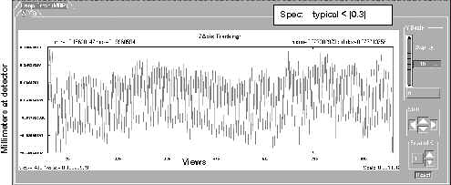
[Z-RATIO ] Plot computes the ratio of outer row Z-channels (Channels 763, 764, & 765 averaged) to inner row Z-channels. This is done for both the “A” and “B” sides.
Illustration 5: Z Ratio Plot
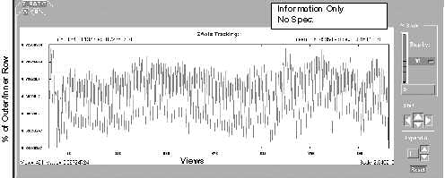
The [CAM POSITION] plot shows the CAM position during a scan from collimator opening (center-line). The absolute value of [A] side plus [B] side is the total aperture size at the collimator. Cam positions are stored in the scan file.
Illustration 6: CAM Position Plot
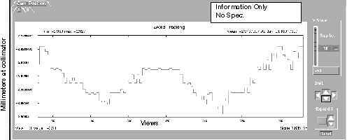
[APERTURE] plot indicates the width of the Collimator Cam aperture in millimeters. Due to the distance magnification factor, the width at the collimator is smaller than prescribed acquisition mode, or width of the beam at the detector window.
Illustration 7: Aperture Plot
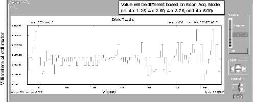
[FOCAL SPOT POSITION] plot shows the calculated focal spot position from the centerline of either the [A] or [B] side. The vertical scale (in millimeter) represents that portion of the focal spot length. The absolute value of the [A] side plus the [B] side should equal the focal spot length (Small Spot = 0.7mm, Large Spot = 1.2mm).
Illustration 8: Focal Spot Position (A/B) Plot
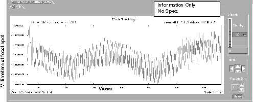
[FOCAL SPOT LENGTH] plot shows the calculated focal spot length. The length may change slightly due to mA, rotor wobble or gantry rotation wobble. Length is also based on the calculations, which use values from the Z-channels. Typically the small spot size is 0.7mm, and the large spot size is 1.2mm.
Illustration 9: Focal Spot Length Plot
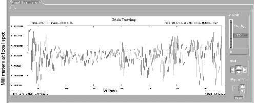
[FOCAL SPOT POSITION] plot indicates the calculated focal spot position relative to the centerline, with the center position being 0. The focal spot moves during a scan due to mA, rotor wobble, gantry rotation wobble, and because of tube (target) heat.
Illustration 10: Focal Spot Position Plot
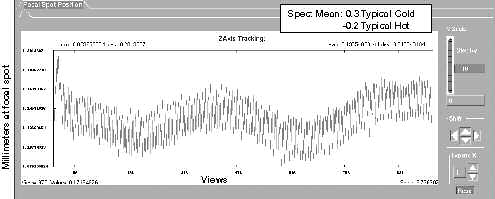
[CAM RINGING] provides a plot of high frequency variations, such as variations that are 180 degrees out of phase, like typical CAM ringing. A specification is not available, but typical values are less than 0.1 counts.
Illustration 11: CAM Ringing Plot
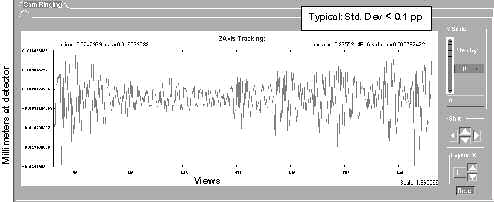
[ROTOR RUN] provides a plot of high frequency variations that are IN phase, such as the small periodic movement of the anode at the rotor run frequency. Typical values are less than 0.1 count values.
Illustration 12: Rotor Run Plot
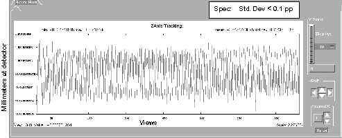
A [BLOCKED CHANNEL] indicates that the value for DAS Channel 762 falls below the 10% threshold. Indicating that the channel is blocked and tracking (CAM positions) remains constant at the last known good position. This plot indicates a normal unblocked scan. Unblocked condition is indicated by a numeric value of 0. Blocked view condition is indicated by a numeric value of 1.
Illustration 13: Blocked Channel Menu
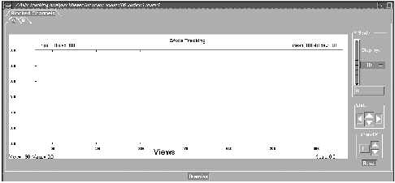
The [MULTI-SCAN SELECT] option allows the user to calculate and view multiple scans. Select the [MULTI-SCAN SELECT] button, and then select the exams, series, or multiple scans. Once scans are selected, then select the plot that you are interested in. Due to the time it may take, based on the number of scans selected, a pop-up window may appear, to indicate the number of scans selected and the approximate time to calculate. If the time is too long, or wrong scans are selected, hit [CANCEL] . Once the [OK] button is selected, you cannot cancel processing.
Illustration 14: Multi-Scan Select Menu
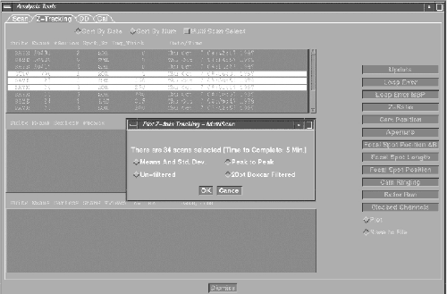